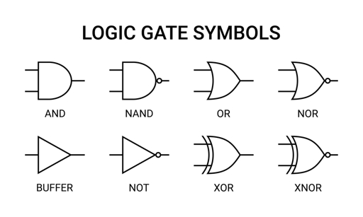
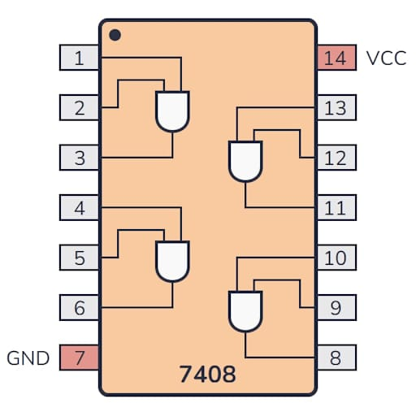

Everything in modern computing boils down to two states: 1 (High/ON) and 0 (Low/OFF).
Output is HIGH only if Both inputs are HIGH.
Output is HIGH if Either input is HIGH.
Flips the signal. 1 becomes 0. 0 becomes 1.
A map of every possible input combination and the resulting output.

Schematic Symbols for Logic Gates
In digital electronics, an unconnected pin is "Floating"—it isn't 1 or 0, it's garbage.
Pull-up Resistor: A resistor connected to VCC that ensures a pin stays HIGH when the switch is open.
Pull-down Resistor: A resistor connected to GND that ensures a pin stays LOW when the switch is open.

Quad 2-Input AND Gate IC
Tomorrow: Soldering Theory—Making your circuits permanent and professional.